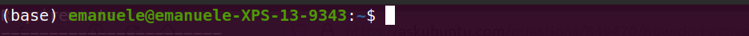

Installation
The EnGene software can be directly download from the GitHub page by using the git. The following steps briefly guides you to the use of git: for furher information follow this link .
1. If you're using the https option, you can copy the EnGene version from the GitHub page to your local path:
git clone https://github.com/emanuelefalbo/EnGene.git
Note
Cloning with SSH can be done if a SSH protected-key has been added to your GitHub profile.
Done! You have the current version of EnGene downloaded locally.
Requirements
The EnGene software runs with the python3 language. The following packages are required for the correct behaviour of EnGene:
numpy
pandas
argparse
sklearn
kneed
matplotlib
seaborn
sklearn_extra
Pip or Conda
The above packages can be installed by pip as:
pip install numpy pandas argparse scikit-learn scikit-learn-extra seaborn matplotlib kneed
The above libraries might give generate some conflicts for future configuration of the program. In that case, a conda environment is suggested. To install conda locally you can follow this conda link . Once conda is installed, it will be added automatically to your PATH (.bashrc or .bash_profile) which sligthly slows your prompt ; this can be seen at prompt of the terminal like follows:
{kind=link}
This will activate the base environment every time a terminal is open. However, to avoid this you can create a file name .condarc and insert this line auto_activate_base: false
Then, the following steps can be followed for settting up properly conda.
1. Create an environment as follows:
conda create -n myenv
you can list the environment by executing:
conda env list
2. Activate your environment:
conda activate myenv
3. Install all the above packages:
conda install numpy pandas
However, some libraries, such as scikit-learn and kneed, are not present in common searching channels of conda, therefore, these can be installed from different channels:
conda install -c conda-forge matplotlib scikit-learn scikit-learn-extra seaborn argparse
Note
The installation of these packages my require some time, beacuse conda is clever enough to check conflicts and compatibility between libraries versions.
Warning
When working in conda envirnoment it is preferable to install packages with conda such as shown here, and NOT with pip, which might cause conflicts.